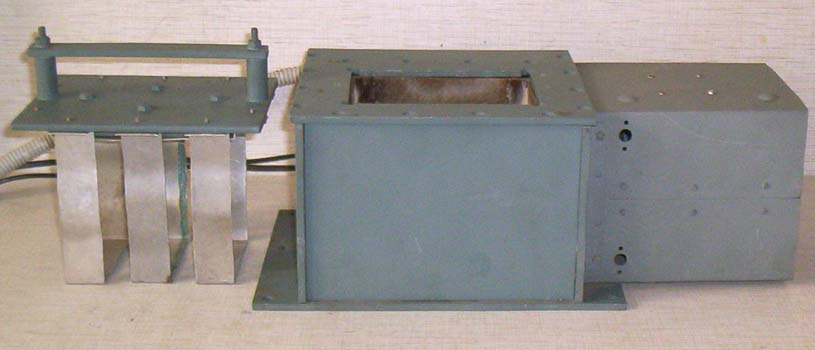
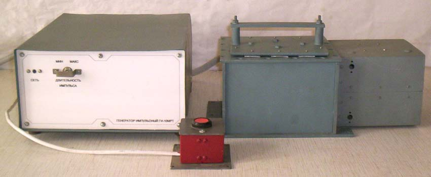
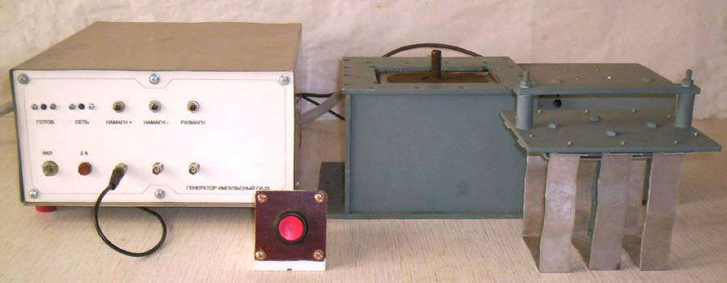
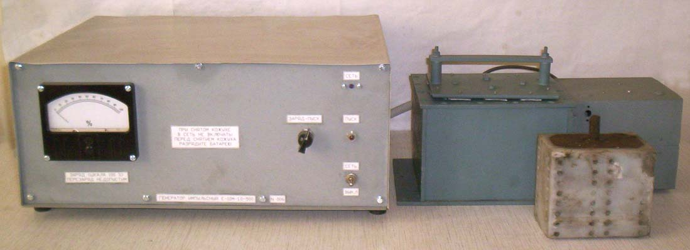
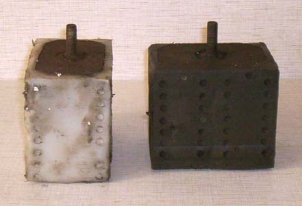

Устройство для
импульсного намагничивания и размагничивания
ферритовых блоков размером до 140 х 90 х 120 куб. мм

Назначение
Устройство намагничивающее импульсное предназначено для работы
в составе установок намагничивания [5] в комплекте с различными генераторами
мощных импульсов тока [1 - 3] и установок размагничивания [5]
в комплекте с биполярным генератором мощных импульсов тока [1] (полное
размагничивание) или емкостным накопителем энергии [3] (частичное
размагничивание). Оно позволяет намагничивать и размагничивать постоянные
магниты и магнитные системы на основе ферритов марок БА, СА, РА, в частности,
сборные блоки размером 135 х 90 х 120 мм3, используемые в магнитных
сепараторах для обогащения железной руды (рис. 4).
Технические данные:
- размеры зоны намагничивания: длина - 140 мм, ширина - 96
мм, высота - 120 мм
- направление намагничивания - по высоте
- амплитуда магнитной индукции в зоне намагничивания не
менее 1 Тл при амплитуде импульса тока не более 1200 А
- неоднородность магнитного поля в зоне намагничивания не
более 15 %
- длительность импульса тока не более 30 мс
- форма импульса тока произвольная (синусоидальная,
колоколообразная, с экспоненциальным фронтом и спадом и т. п.)
- максимально допустимая амплитуда импульса тока 1500 А
- готовность к работе - сразу после включения
- средняя потребляемая мощность при частоте следования
импульсов тока амплитудой 1200 А и частотой 0.1 Гц не превышает 300 Вт
- габаритные размеры не более 280 х 200 х 155 мм3
(без вентилятора); габаритные размеры вентилятора 140 х 140 х 170 мм3
- масса не более 20 кг
Для повышения производительности устройство снабжено
охлаждающим вентилятором, который позволяет существенно сократить паузы в
работе, требующиеся для охлаждения обмотки. При совместной работе с биполярным
генератором мощных импульсов тока [1] устройство
комплектуется датчиком температуры. Чтобы поместить магнит в зону намагничивания
и вынуть его оттуда, может использоваться немагнитный токонепроводящий
контейнер. Конструкция контейнера определяется конструкцией и размерами
намагничиваемого магнита. При намагничивании и размагничивании магнитных блоков
максимального размера может потребоваться съемник, позволяющий преодолевать силы
притяжения, возникающие между магнитами и магнитной системой устройства.
Производительность при использовании вентилятора до 150 циклов намагничивания и
50 циклов размагничивания в час. На рис. 1 - 3 показан внешний вид установок
намагничивания (размагничивания) в комплекте с различными импульсными
генераторами.

Рис. 1. Установка импульсного намагничивания в комплекте с
однополярным генератором мощных импульсов тока [2].

Рис. 2. Установка импульсного намагничивания и размагничивания
в комплекте с биполярным генератором мощных импульсов тока
[1].

Рис. 3. Установка импульсного намагничивания и частичного
размагничивания в комплекте с емкостным накопителем энергии 1 кДж 500 В
[3].
На рис. 4 показан внешний вид блоков для магнитного
сепаратора, при производстве и ремонте которых используется намагничивающее
устройство.

Рис. 4. Сборные блоки (материал - феррит бария) размером 135 х
90 х 120 мм3 для магнитного сепаратора.
Для контроля амплитуды магнитной индукции в зоне
намагничивания, а также для проверки качества намагничивания постоянных магнитов
могут использоваться тесламетры [4].
Ссылки:
- Генератор мощных
импульсов тока биполярный
- Генератор мощных
импульсов тока однополярный
- Генератор мощных импульсов
тока (емкостной накопитель энергии)
- Приборы для
измерения магнитных полей
- Установки
импульсного намагничивания и размагничивания постоянных магнитов
Словарь
терминов:
- Генератор импульсов - прибор или устройство для
создания последовательности импульсов.
- Импульсный генератор - генератор
импульсов напряжения или тока.
- Магнитная индукция - вектор, численно
равный пределу отношения силы, действующей со стороны магнитного поля на
элемент проводника с электрическим током, к произведению тока и длины
элемента проводника, если длина этого элемента стремится к нулю, а элемент
так расположен в поле, что этот предел имеет наибольшее значение, и
направленный перпендикулярно к направлению элемента проводника и к
направлению силы, действующей на этот элемент со стороны магнитного поля,
причем из его конца вращение по кратчайшему расстоянию от направления силы к
направлению тока в элементе проводника должно быть видно происходящим против
часовой стрелки.
- Магнитная система - магнитная цепь.
- Магнитный сепаратор - устройство для
отделения магнитных веществ (ферромагнетиков) от немагнитных или
слабомагнитных, принцип работы которого основан на использовании сил
магнитного притяжения.
- Намагничивание
- воздействие на образец магнитным полем, вследствие которого у образца
появляется отличная от нуля остаточная намагниченность.
- Постоянный магнит - объект, создающий
магнитное поле за счет собственных внутренних элементарных электрических
токов, текущих без использования внешнего источника энергии в составляющем
объект материале.
- Размагничивание
- процедура, позволяющая уменьшить остаточную намагниченность образца до
таких значений, когда ею можно пренебречь.
- Феррит бария - магнитотвердый материал
на основе окислов железа и бария состава BaO·6Fe2O3. В
обозначении марки (например, 19БА190) первое число (19) обозначает
энергетическое произведение (в кА·Тл/м), первая буква - состав феррита (Б -
бариевый), вторая буква - свойства (А - анизотропный, И - изотропный),
второе число (190) - коэрцитивную силу по намагниченности (в кА/м).
- Феррит стронция - магнитотвердый
материал на основе окислов железа и стронция состава SrO·6Fe2O3.
В обозначении марки (например, 28СА250) первое число (28) обозначает
энергетическое произведение (в кА·Тл/м), первая буква - состав феррита (С -
стронциевый), вторая буква - свойства (А - анизотропный, И - изотропный),
второе число (250) - коэрцитивную силу по намагниченности (в кА/м).
16.03.2004
12.09.2005
26.01.2006
23.06.2010
18.05.2019
Альтернативные источники
энергии
Компьютеры и
Интернет
Магнитные поля
Механотронные системы
Перспективные
разработки
Электроника и
технология
Главная страница